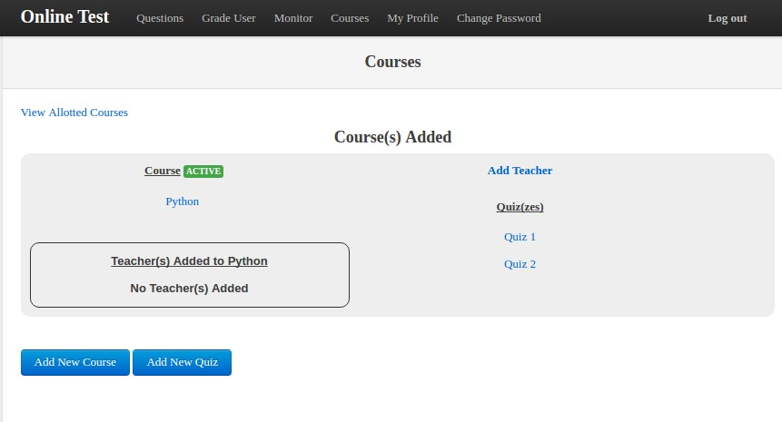

Courses¶
For students to take a quiz, it is imperative for the moderator to create a course first.
Setting up a new course¶
To create a course, click on the Add New Course button on the moderator’s dashboard. This will lead you to a create add course page, where you need to fill in the following fields.
- Name
Name of the Course
- Active
If the course should be active for students to take the quiz. The status of the course can be edited later.
- Enrollment
Open enrollment is open to all students. Enroll Request requires students to send a request which the moderator can accept or reject.
Features in Courses¶
Click on the Courses link located at the navigation bar, to view all the courses created by the moderator.
The following features are available for courses
- Course Name
Clicking on course name link will display all the enrolled, rejected and requested students list. Moderator can accept or reject the student.
- Quiz Name
Clicking on the quiz name will let you edit the quiz.
- Add Teacher
Clicking on Add teacher can let you add teachers for the course. The teachers can edit and modify only the specific course that are allotted to them.
- View Allotted Course
Clicking on view allotted courses will display the courses the moderator is added to by other course creators.